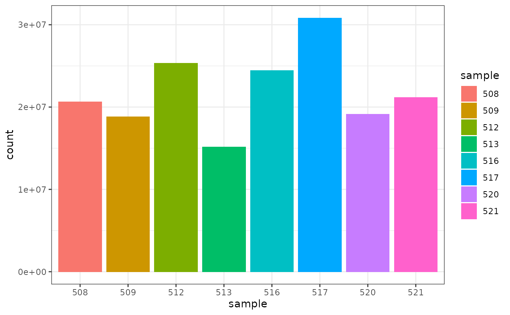
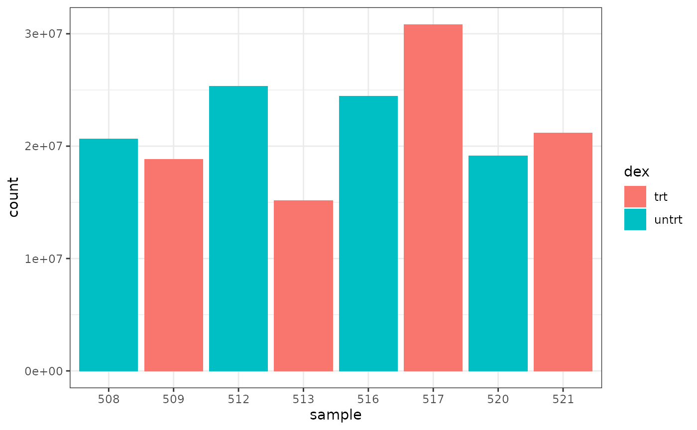
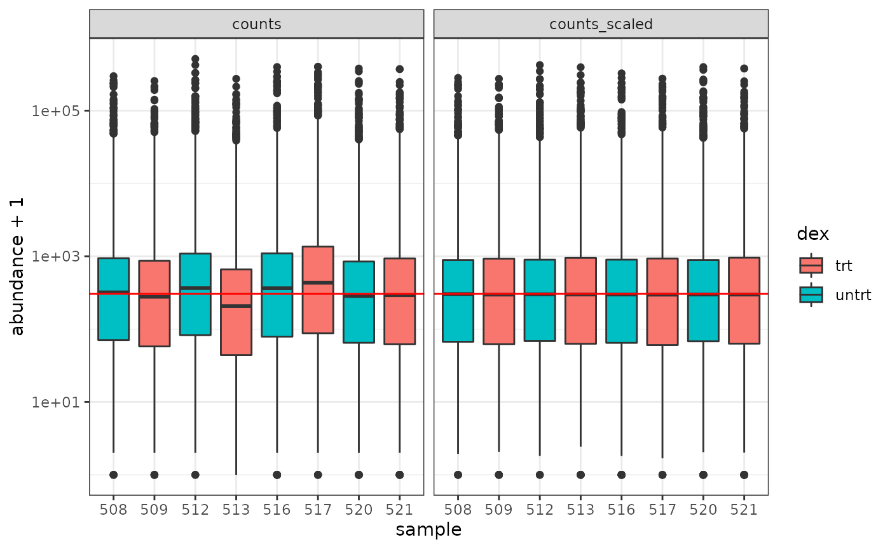
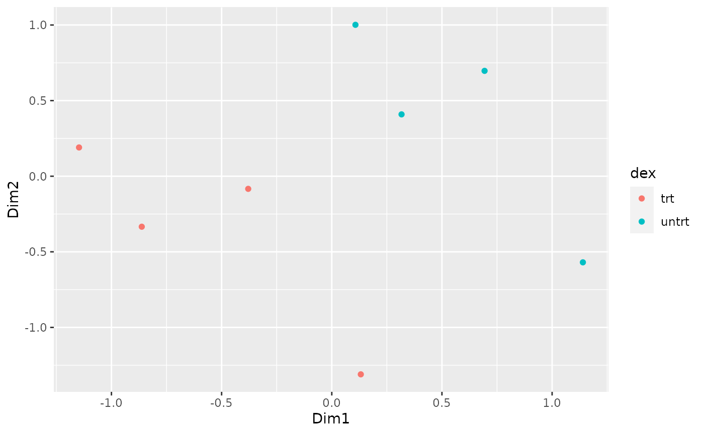
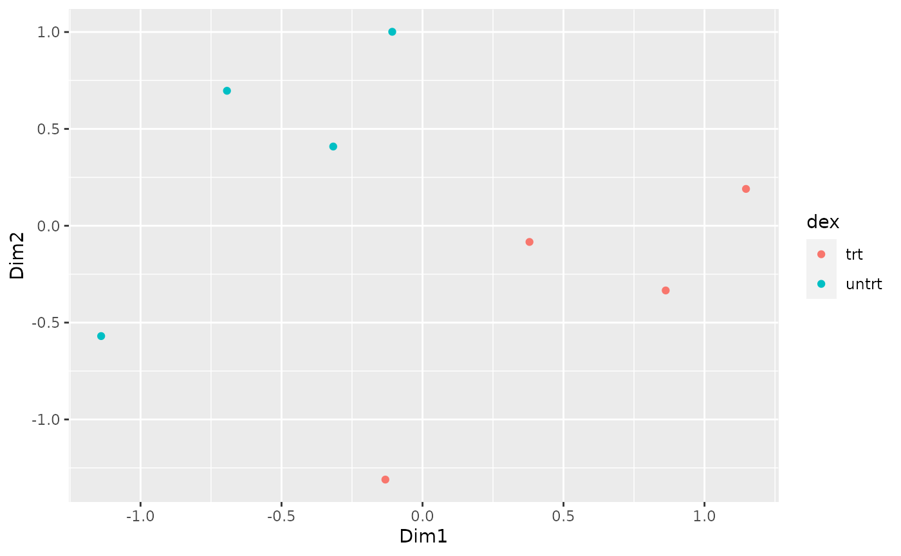
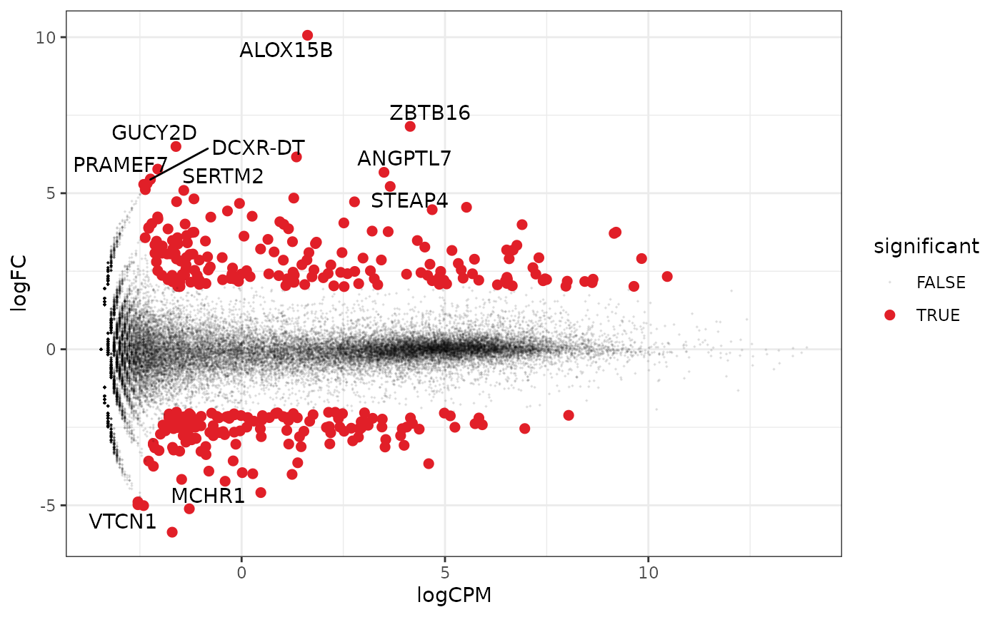
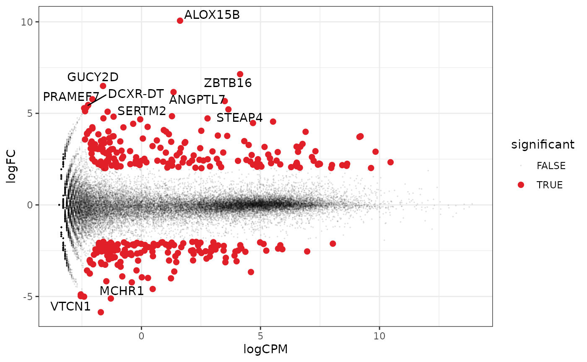
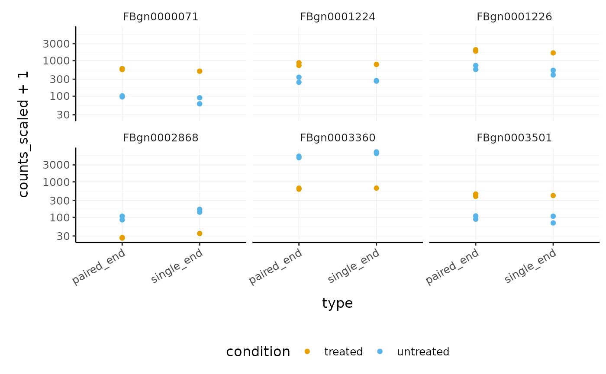

# load libraries library(airway) library(tibble) library(dplyr) library(tidyr) library(readr) library(stringr) library(purrr) library(ggplot2) library(ggrepel) library(tidyHeatmap) library(tidybulk)
Plot settings. Set the colours and theme we will use for our plots.
# Use colourblind-friendly colours friendly_cols <- dittoSeq::dittoColors() # Set theme custom_theme <- list( scale_fill_manual(values = friendly_cols), scale_color_manual(values = friendly_cols), theme_bw() + theme( panel.border = element_blank(), axis.line = element_line(), panel.grid.major = element_line(size = 0.2), panel.grid.minor = element_line(size = 0.1), text = element_text(size = 12), legend.position = "bottom", #aspect.ratio = 1, strip.background = element_blank(), axis.title.x = element_text(margin = margin(t = 10, r = 10, b = 10, l = 10)), axis.title.y = element_text(margin = margin(t = 10, r = 10, b = 10, l = 10)), axis.text.x = element_text(angle = 30, hjust = 1, vjust = 1) ) )
# create some example tables to use data(airway) # counts table counts <- assay(airway) %>% as_tibble(rownames = "geneID") # sample information table sampleinfo <- colData(airway) %>% as_tibble(rownames = "sample") # data preprocessing counts_tt <- # convert to tidy format pivot_longer(counts, cols = starts_with("SRR"), names_to = "sample", values_to = "counts") %>% # get gene symbols ensembl_to_symbol(geneID) %>% # order the columns for tidybulk select(sample, geneID, counts, transcript) %>% # add the sample info left_join(sampleinfo) %>% # shorten sample name mutate(sample=str_remove(sample, "SRR1039")) %>% # convert to tidybulk tibble tidybulk(.sample=sample, .transcript=geneID, .abundance=counts)
## Joining, by = "sample"## # A tibble: 8 x 2
## sample total_reads
## <chr> <int>
## 1 508 20637971
## 2 509 18809481
## 3 512 25348649
## 4 513 15163415
## 5 516 24448408
## 6 517 30818215
## 7 520 19126151
## 8 521 21164133We can also check how many counts we have for each sample by making a bar plot. This helps us see whether there are any major discrepancies between the samples more easily.

As we are using ggplot2, we can also easily view by any other variable that’s a column in our dataset, such as cell line, simply by changing fill.
We can colour by dex treatment.
 We can colour by cell line.

# filter counts counts_filtered <- counts_tt %>% keep_abundant(factor_of_interest = dex) # scale counts counts_scaled <- counts_filtered %>% scale_abundance() # create box plots counts_scaled %>% pivot_longer(cols = c("counts", "counts_scaled"), names_to = "source", values_to = "abundance") %>% ggplot(aes(x=sample, y=abundance + 1, fill=dex)) + geom_boxplot() + geom_hline(aes(yintercept = median(abundance + 1)), colour="red") + facet_wrap(~source) + scale_y_log10() + theme_bw()

airway %>% tidybulk() %>% keep_abundant(factor_of_interest = dex) %>% scale_abundance() %>% reduce_dimensions(method="MDS", scale = FALSE) %>% pivot_sample() %>% ggplot(aes(Dim1, Dim2, color = dex)) + geom_point()
## tidybulk says: to access the raw results do `attr(..., "internals")$MDS`
MA plots enable us to visualise amount of expression (logCPM) versus logFC. Highly expressed genes are towards the right of the plot. We can also colour significant genes (e.g. genes with FDR < 0.05)
# perform differential testing counts_de <- counts_tt %>% test_differential_abundance( .formula = ~ 0 + dex + cell, .contrasts = c("dextrt - dexuntrt"), omit_contrast_in_colnames = TRUE )
## tidybulk says: All methods use raw counts,
## irrespective of if scale_abundance or adjust_abundance have been calculated,
## therefore it is essential to add covariates such as batch effects (if applicable) in the formula.## Warning in eval(dots[[i]][[action]], env, env): tidybulk says: highly abundant
## transcripts were not identified (i.e. identify_abundant()) or filtered (i.e.,
## keep_abundant), therefore this operation will be performed on unfiltered
## data. In rare occasions this could be wanted. In standard whole-transcriptome
## workflows is generally unwanted.## tidybulk says: The design column names are "dextrt, dexuntrt, cellN061011, cellN080611, cellN61311"## tidybulk says: to access the raw results (fitted GLM) do `attr(..., "internals")$edgeR`# maplot, minimal counts_de %>% pivot_transcript() %>% ggplot(aes(x=logCPM, y=-logFC, colour=FDR < 0.05)) + geom_point()+ theme_bw()

A more informative MA plot, integrating some of the packages in tidyverse.
counts_de %>% pivot_transcript() %>% # Subset data mutate(significant = FDR<0.05 & abs(logFC) >=2) %>% mutate(transcript = ifelse(abs(logFC) >=5, as.character(transcript), "")) %>% # Plot ggplot(aes(x = logCPM, y = logFC, label=transcript)) + geom_point(aes(color = significant, size = significant, alpha=significant)) + geom_text_repel() + scale_color_manual(values=c("black", "#e11f28")) + scale_size_discrete(range = c(0, 2)) + theme_bw()

To run below you’ll need the clusterProfiler and org.Hs.eg.db packages. This is just one suggestion, adapted from here. If you have other suggestions for how to do a ‘tidy’ pathway analysis feel free to let us know.
library(clusterProfiler) library(org.Hs.eg.db) # extract all genes tested for DE res <- counts_de %>% pivot_transcript() # GO terms egoCC <- res %>% filter(FDR < 0.1 & logFC > 0 ) %>% pull( "transcript" ) %>% enrichGO( OrgDb = org.Hs.eg.db, keyType = 'SYMBOL', ont = "BP", universe = (res %>% pull( "transcript" ) ) ) dotplot(egoCC) goplot(egoCC) emapplot(egoCC) # MSigDB Hallmark gmtH <- read.gmt( "https://data.broadinstitute.org/gsea-msigdb/msigdb/release/6.2/h.all.v6.2.symbols.gmt" ) enrH <- enricher( gene = ( res %>% filter(FDR < 0.1 & logFC > 0) %>% pull( "transcript" ) ), TERM2GENE = gmtH, universe = ( res %>% pull( "transcript" ) ) ) dotplot( enrH ) emapplot(enrH)
tidybulk allows for data nesting, using the tidyr utility nest. This is an extremely powerful tool as it enables easily performing analyses on data subsets.
Let’s suppose we want to perform differential transcript abundance analysis independently for two different data subsets to compare results after the test
pasilla_de <- rpharma2020tidytranscriptomics::pasilla %>% # Convert SummarizedExperiment object to tibble tidybulk %>% # Filter counts identify_abundant(factor_of_interest=condition) %>% # Scale abundance scale_abundance() %>% # Nest nest(data = -type) %>% # Differential analysis mutate(data = map( data, ~ test_differential_abundance(.x, ~ condition) )) %>% unnest(data)
## tidybulk says: All methods use raw counts,
## irrespective of if scale_abundance or adjust_abundance have been calculated,
## therefore it is essential to add covariates such as batch effects (if applicable) in the formula.## tidybulk says: The design column names are "(Intercept), conditionuntreated"## tidybulk says: to access the raw results (fitted GLM) do `attr(..., "internals")$edgeR`## tidybulk says: All methods use raw counts,
## irrespective of if scale_abundance or adjust_abundance have been calculated,
## therefore it is essential to add covariates such as batch effects (if applicable) in the formula.## tidybulk says: The design column names are "(Intercept), conditionuntreated"## tidybulk says: to access the raw results (fitted GLM) do `attr(..., "internals")$edgeR`Now we can for example compare the number of differentially transcribed genes and their co-expression
pasilla_de %>% nest(data = -type) %>% mutate( number_of_differential = map_int( data, ~ .x %>% pivot_transcript() %>% filter(FDR < 0.05) %>% nrow ))
## # A tibble: 2 x 3
## type data number_of_differential
## <fct> <list> <int>
## 1 single_end <tibble [43,797 × 13]> 40
## 2 paired_end <tibble [58,396 × 13]> 1270We can easily see which genes overlap, and plot them
pasilla_de %>% filter(FDR < 0.05) %>% nest(data = -feature) %>% mutate(occurrences = map_int(data, ~ .x %>% distinct(type) %>% nrow)) %>% # We filter some of them filter(occurrences == 2) %>% dplyr::slice(1:6) %>% unnest(data) %>% # And plot ggplot(aes(type, counts_scaled +1, color=condition)) + geom_point() + facet_wrap(~feature) + scale_y_log10() + custom_theme

Let’s suppose we want to identify the markers that distinguish epithelial from endothelial cells, and we also want to then visualise the abundance of those transcripts across many cell types to understand their cell type specificity.
cell_type_tt = rpharma2020tidytranscriptomics::cell_type_df %>% tidybulk(sample, symbol, count) markers_df = cell_type_tt %>% # Filter counts identify_abundant(factor_of_interest=cell_type) %>% # Scale abundance scale_abundance() %>% # Nest nest(data = everything()) %>% # Investigate one cell type pair mutate(comparison_data = map( data, ~ .x %>% filter(cell_type %in% c("endothelial", "epithelial")) %>% mutate(cell_type = as.character(cell_type) ) )) %>% #test. We run on the two populations but we select data for all populations mutate(markers = map( comparison_data, ~ .x %>% # Differential transcription test_differential_abundance( ~ 0 + cell_type, .contrasts = c("cell_typeendothelial - cell_typeepithelial"), action="only", omit_contrast_in_colnames = TRUE ) %>% # Select markers filter(logFC > 2) %>% dplyr::slice(1:10) %>% pull(symbol) )) %>% # Add marker info to original data mutate(data = map2(data, markers, ~ .x %>% filter(symbol%in% .y))) %>% select(data) %>% unnest(data)
Now we can see the abundance of the markers in all our cell types.
markers_df %>% ggplot(aes(cell_type, count_scaled +1 )) + geom_boxplot(outlier.shape = NA) + geom_jitter(size=0.3) + facet_wrap(~symbol, ncol=5) + coord_flip() + scale_y_log10() + custom_theme